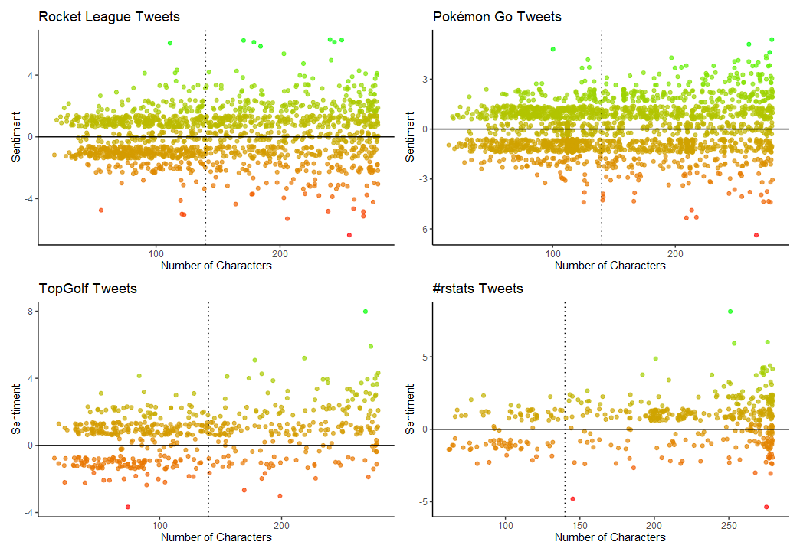

Tweet Sentiment
Using sentiment analysis is an effective way to see how end users feel about a product or service. Social media is used to communicate with audiences, and it is a great place to obtain insights. Businesses will always be focused on their online presence, as it can be used in many ways to ensure quality customer experiences with their products or services.
How it works?
Tweet sentiment
A Tweet’s sentiment is measured by assigning numerical values to words based on their inherent sentiment. An example of a word with positive sentiment would be "love" and a word with negative sentiment would be "hate". For all the words within a Tweet the sentiment is aggregated and this is how the overall “Tweet Sentiment” is obtained.
Are all the words in a Tweet used?
Often in sentiment analysis stop words are removed from the data as they take up resources if they where processed, and the words do not add much value to the data. Stop words are words like: "a", "the", "is", … and so on.
Other words can be removed based on the analysis, for example I removed "http" because it is part of a web address, and therefore not very useful to me. However you can filter words differently, and customize your analysis depending on it’s needs.
What is the “Number of Characters” on the x axis?
This is the number of characters that each Tweet contains. Tweets have a maximum of 280 characters. The dotted line in the middle of the x axis is at the 140 mark for characters, so it is just a reference point. For more details about characters in Twitter, click here to check out a character counter and more info about Twitter’s character quirks.
Tweet Sentiment Visual

For each topic I collected varying amounts of data, and I did this to show how different each topic can be based on the amount of data collected, and how the word filters and sentiment values can impact the insights from this type of analysis.
Rocket League Tweets
When it came to Tweets about Rocket League, the sentiment varied, but overall the average sentiment was positive. There was a lot of data collected, and as the character count increased the Tweets trended to be more positive.
Pokémon Go Tweets
Tweets about Pokémon Go where fairly even as far as sentiment, with many “shorter” tweets being both positive and negative, as the Tweets became longer, the both positive and negative sentiment where distributed quite evenly, but many positive tweets actually Trended upward, with groups of Tweets becoming more positive with more characters.
This tells me that the recent Pokémon Go events likely where enjoyed by many, but had some critiques. Additional analysis can give us more insights into the experiences of these users.
TopGolf Tweets
Tweets about TopGolf where very positive compared to the other topics, of course this is a completely different topic as
Rocket LeagueandPokémon Goare video games, andTopGolfis an entertainment venue. There is a number of Tweets with negative sentiment, and these can be looked into and in the event that the users Tweeted about issues they had, as a company, this data can be used to fix those issues for future customers, but also reach out to users with a bad experience and offer compensation, ask for more details, etc.
#rstats
#rstats was the one topic in this project that was a Hashtag in user’s Tweets. As I expected the sentiment is mostly positive however the is negative sentiment on Twitter. Not much data was collected, however near the maximum character count is where a large portion of the Tweets for this topic are.
Note:
I am aware that it may be hard to see every dot, when each plot is rendered alone you can read the points much easier. However, for this project I had to shrink the images so they all could be “stitched” together using the
patchworkpackage, and allowing the final image to fit on the webpage. I could have showed each one rendered alone, but I think it is important to see them all stitched together so I could demonstrate the importance of thedata collectionandcleaningstages for this analysis.
Disclaimer:
This project is not meant to be used to draw an opinion of any mentioned brand, product, community, etc. It is not meant to be used to make assumptions or say if something is “good” or not. This project is meant to show this specific type of analysis. The data used in this project was obtained in compliance with Twitter Developer policies.
I picked these topics because I enjoy playing both Rocket League and Pokémon Go. I enjoy going to play at TopGolf, and I find the technology there interesting. Lastly because of my data background the #rstats hashtag is relevant to me.